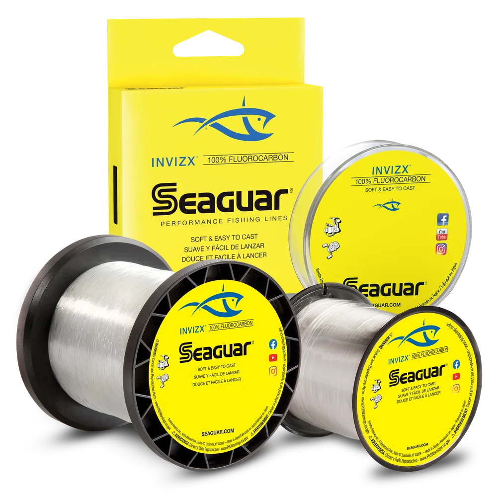

Seaguar InvizX Fluorocarbon
Diameter chart, reel capacity & backing guide

A 100% fluorocarbon main line for freshwater fishing, offered from 4 to 25 lb. Seaguar positions InvizX around soft handling and low memory. Plan a full fluorocarbon fill or a shorter working section over mono backing; a short leader on braid is a different setup.
- Construction
- 100% fluorocarbon
- Listed strengths
- 4-25 lb
- Line type
- Fluorocarbon main line
Is InvizX right for your setup?
InvizX is worth considering when you want fluorocarbon as the line you cast, rather than just a short leader. A full fill avoids a backing connection, while a shorter working section can leave less expensive mono underneath. The main tradeoff is handling: a thick fluorocarbon can fit a compact spinning reel by volume but still be difficult to control. Choose a manageable strength for the rod and presentation before deciding how much to spool.
How much InvizX will fit?
Calculated estimates, not measured fills. Stop at the reel manufacturer's fill level even if some line remains.
Seaguar InvizX diameter chart
Official InvizX diameters and strength-specific spool lengths. AbrazX, Tatsu, Red Label, and dedicated Seaguar leader products have their own specifications.
| Strength | Inches | mm | Spools (yd) |
|---|---|---|---|
| 0.006 | 0.165 | 200, 1000 | |
| 0.008 | 0.205 | 200, 600, 1000 | |
| 0.009 | 0.235 | 200, 600, 1000 | |
| 0.010 | 0.260 | 200, 600, 1000 | |
| 0.011 | 0.285 | 200, 600, 1000 | |
| 0.013 | 0.330 | 200, 600, 1000 | |
| 0.015 | 0.370 | 200, 600, 1000 | |
| 0.016 | 0.405 | 200, 600, 1000 | |
| 0.017 | 0.435 | 200, 1000 |
Choosing your InvizX strength
For lighter spinning setups, compare the 4-8 lb sizes against the rod's line range, cover, and target fish. Moving to 10 lb or higher is not just a strength change: the thicker line takes more spool space and may be harder to manage on a small spool.
For a baitcaster, select strength for the lure and cover rather than copying the reel's capacity label. The 10-15 lb and 17-25 lb sizes cover different demands; the heavier group is not an automatic upgrade for ordinary open-water fishing.
Capacity is only the space check. Keep enough working InvizX for casting, fish runs, and retying, with the backing knot well below the line you normally use. If InvizX will only be a short leader, calculate the reel's capacity using the actual main line instead.
This is a specification-based setup guide. ReelCalc has not used this page to claim a hands-on InvizX performance test.
Want a guided recommendation?
Continue in the Setup WizardSame pound test, different diameters
At your selected strength
Loading diameter comparisons...
What changes with another line?
Nearby diameters in the line database
| Line | Strength | Inches | Difference |
|---|---|---|---|
| Loading line database... | |||
Backing, working line & leaders
A full fluorocarbon fill
Use capacity-only mode when InvizX will fill the spool without backing. The estimate uses the exact selected diameter, not a generic fluorocarbon pound-test conversion. Wind evenly and stop at the reel manufacturer's fill level, even if the retail spool has line left.
A working section over mono
Backing is optional and sits underneath the InvizX. It can be useful when the reel holds much more fluorocarbon than you need to fish. Choose the working length first, keep the connection below normal casting depth, and only reuse backing that is in sound condition.
Using InvizX as a leader
A short InvizX leader belongs at the lure end of a braid setup, not underneath it. That does not make this page's full-fluorocarbon capacity your braid capacity. Select the braid main line in the Wizard and choose leader strength separately for the presentation and cover.
Choosing a leader for braidHow Much Fits on These Reels?
Estimated full-spool capacity for the InvizX strength selected above, with no backing. These are calculated examples, not physical tests or recommendations for every pairing.
Loading capacity estimates...
InvizX questions, answered
Is InvizX good for spinning reels?
InvizX is marketed as a softer, more manageable fluorocarbon main line. Lower strengths are generally easier to handle on spinning reels; heavier diameters can become less comfortable on small spools.
Can InvizX be used as main line?
Yes. It is sold and positioned as a 100% fluorocarbon main line. Use ReelCalc to check the exact diameter against your reel before deciding how much to put on the spool.
Can InvizX be used as leader material?
Yes. Many anglers use main-line fluorocarbon as leader material, although dedicated leader products may be formulated differently. Match the leader to cover, lure, drag, and target fish.
Is a 200-yard spool enough?
Only if the amount needed is 200 yards or less. Select your reel and InvizX strength to check a full fill, or enter a shorter working length and calculate backing. The amount required changes with both reel capacity and actual line diameter.
Should I use backing with InvizX?
Backing is optional. It can reduce premium-line use when the reel holds more fluorocarbon than you need, but a full fluorocarbon fill may be simpler when one retail spool already covers the calculated capacity.
How is InvizX different from Seaguar Red Label or Sunline FC Sniper?
They are different products with different published diameters and manufacturer positioning. Compare exact strengths by diameter rather than assuming equal pound tests occupy the same spool volume.
Specifications & sources
InvizX strengths, diameters, and spool combinations were rechecked against Seaguar's official product variants on September 12, 2026. The unassigned 25 lb / 600 yd option is excluded. Product positioning is attributed to Seaguar; capacities below are calculated rather than measured fills. No live stock or price is implied.
Calculations use the catalog's listed inch diameters. Published inch and millimeter values may differ slightly because of rounding.
- Official Seaguar InvizX product page Current strengths, official diameters, spool offerings, and manufacturer positioning.